Blog
-
How Far Are We Really from Reasoning within GenAI? My Perspective in GPT-o1 times and Possible Ways to Get There 🤖🧠
Exploring the current state of reasoning in GenAI, the challenges faced, and potential approaches to achieving true reasoning capabilities.
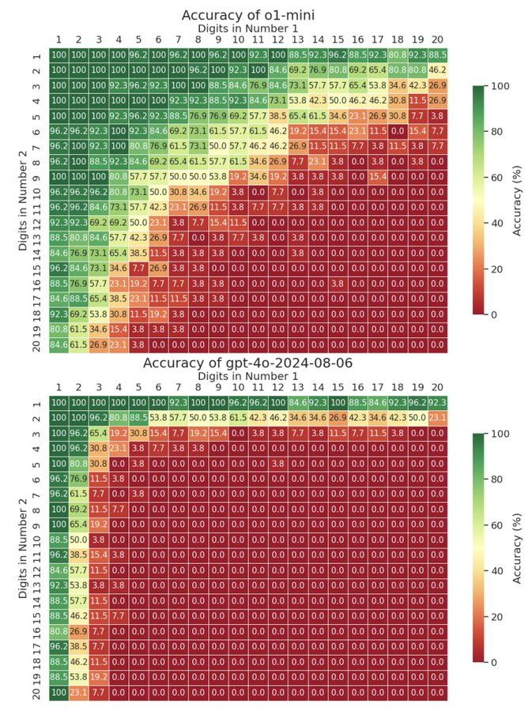𝗧𝗟;𝗗𝗥 ⏱️
LinkedIn Post
• Reasoning is key for transforming AI into AGI
• Current AI models show significant weaknesses in simple tasks
• Optimism about LLMs learning math and reasoning
• Proposed method for teaching math skills to LLMs
• Questions and call for collaboration
Reasoning is a Key Ability to Transform AI into AGI
• In Reflection AI, reasoning has been unmasked. 🦸🏼♂️
• OpenAIs GPT-o1 behavior could be reproduced by silent chain-of-thought (CoT) with other models. 🔄
• Reasoning is still more of a marketing promise than an actual capability. 📈
• For example, we observe significant weaknesses in simple tasks. ⚠️
• Simple multiplication is still a challenge for many models. ✖️
• As long as these fundamental issues remain unresolved, we are far from achieving true reasoning capabilities. 🚧
Why I Believe LLMs Should Be Able to Learn Math and Reasoning
• There are varying opinions on whether reasoning is achievable with current AI. 🤔
• I am fundamentally optimistic, although I acknowledge the recent criticisms from Yann LeCun and older from Emily M. Bender. 🦜
• I have outlined my vision for reasoning in the comments section. ✍️
How to Teach Math Skills as a First Step
• Let's focus on multiplication as a starting point. 🔢
• Generate pairs of numbers of different sizes. ✖️
• Split the data into training, testing, and validation sets. 📊
• Train a language model (LLM) using a tokenizer that only includes numbers 0-9, 'x' for multiplication, and 'EOS' for the end of the sequence. 📝
• Evaluate which model size yields the best results on the test set. 🏆
What Do You Think?
• Could such an experimental setup help evaluate the computational skills of LLMs/transformer architectures? 🧪
• Do you agree that tokens representing individual numbers are crucial for computation, rather than embedding multiple digits like "007" in a single token? 🔍
• Have any of you tried something similar, or would you like to collaborate on this research project? 🤝
For more content like this, follow me ❤️ If you enjoyed this post, please leave a like 👍 or share your thoughts and ideas in the comments. 💬 Image first seen in a post from Yuntian Deng. Looking forward to discuss this with my lovely colleagues at Comma Soft AG within our next AI-Coffee-Hour 🤓
#GenAI #Reasoning #LLM #SimpleMath -
Stop adding Languages to LLMs! The Potential Drawbacks of Training Multilingual Large Language Models (LLMs) for Performance and Sustainability!
Exploring the downsides of creating multilingual LLMs and their impact on performance and resource utilization.
𝗧𝗟;𝗗𝗥 ⏱️
LinkedIn Post
• Challenges of building multilingual LLMs
• Inefficiencies in token usage and context length
• Increased hardware costs and reduced token training
• Weighing multilingual models against language-specific models
Building a Multi-Lang-LLM 🛠️🐣
• When pretraining LLMs, one of the key decisions is which data to include.
• This choice also influences the selection of the tokenizer, which optimizes the number of tokens for the texts used.
• As a result, different characters and character sequences are mapped in the tokenizers for each language.
When you finally use such a LLM in only a subset of available languages you face following problems 🇪🇺🤖
• Inefficient token usage: If the model is only used for one or two languages, many tokens may be rarely or never needed, leading to shorter token sequences in the required language.
• Limited context length: LLMs have a limited context length, measured in tokens, which can result in more expensive inference as the model scales linearly to quadratically with prompt length.
• Increased hardware costs: This can lead to higher hardware costs and omissions.
• Reduced relevant token training: With a multilingual model, fewer relevant tokens and token sequences may have been seen and trained in the required languages.
The Trade-Off: Multilingual Models vs. Language-Specific Models 💰📊
• We need to weigh the benefits of multilingual models against the potential drawbacks and decide whether to prioritize language coverage or risk wasting resources.
• This is particularly important when dealing with languages that are not closely related, such as those with different character sets.
Your Opinion 🤗
• What do you think?
• Have you ever chosen a model especially with reduced number of languages outside English?
• Some more details about Multi-Lang-GenAI can be found here: https://lnkd.in/edgPsdKz
For more content, follow me or reach out to me over DM ❤️
#artificialintelligence #genai #llm #languages -
Where Science Meets Innovation: My personal Highlights & Insights into the PG 2024! Do you have answers to the open Questions?
Highlights and open questions from the Petersberger Gespräche (PG) 2024, covering AI, energy transition, chip technologies, and more.
𝗧𝗟;𝗗𝗥 ⏱️
LinkedIn Post
• AI and consciousness discussions
• Energy transition and regulatory challenges
• Distributed chip technologies in Europe
• Generative AI in media
• Metaverse applications beyond gaming
🧠 AI and Consciousness 🧠
Joscha Bach from Liquid AI presented on how advancements in AI could potentially redefine our understanding of consciousness. My open question for him is: How does he intend to reliably measure the achievement of AI consciousness in his efforts?
👩🏻🔬 Scientific Chemical Hands on how to fix energy transition 👩🏻🔬
As chairman of Alexander von Humboldt Foundation, Robert Schlögl delivered an impressively passionate presentation on energy tech for the climate transition and the phasing out of fossil fuels. Besides scientific derivations, he also highlighted significant regulatory issues that hinder successful implementation. I wonder: How these regulations came about, why they are justified if they are (potentially) not scientifically tenable, and how they can now be resolved?
🇪🇺 Efficient Distributed Chip Technologies from the heart of Europe 🇪🇺
Christian Mayr from Technische Universität Dresden discussed the potential and developments possible in Dresden. He mentioned the use of clustered chip technologies to operate LLMs. One of my open questions is: How can LLMs be distributed across tens of thousands of chips while still achieving acceptable inferential latencies?
📰 GenAI in Media, Opportunities and Risks 📰
In further discussions with Sibylle Anderl from ZEIT Verlagsgruppe, we explored the potentials and risks of Generative AI in text, image, and video generation, and how reducing anonymity could potentially restore credibility. My open question: Whether there is a reliable way to recognize these outputs, given that word frequency alone might not be a proof?
🕹️ Metaverse, not only a Playground? 🕹️
Nico Michels from Siemens presented the potentials of the Metaverse and digital twins. Q: I'd love to see how such models can help even small municipalities with climate adaptation models, regional impact assessments, and improvement options?
The open questions highlight the stimulating topics the diverse guests who aim to drive positive change with a progressive mindset. I would like to thank Comma Soft AG and everyone involved for organizing this fantastic event, especially Stephan Huthmacher, whose heartfelt dedication makes this recurring, inspiring event possible. ❤️
Share your thoughts and impressions, I'll share the streams 🤗
Hashtag#artificialintelligence Hashtag#genai Hashtag#sustainability Hashtag#petersbergergespräche -
Today's Research Proposal: How to achieve "real" thinking and reasoning in GenAI, rather than just relying on a silent Chain of Thought, as seen in ReflectionAI or possibly GPT-o1?
Exploring the potential for achieving true reasoning and thinking in Generative AI models beyond the current Chain of Thought methodologies.
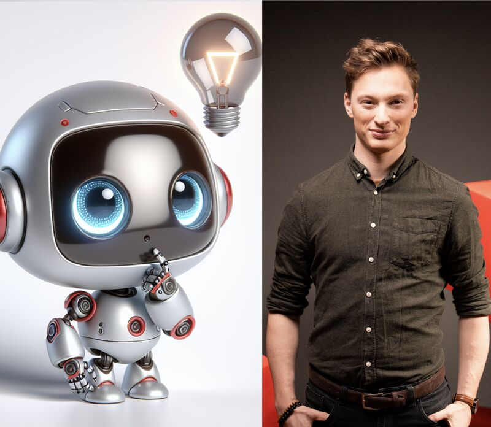𝗧𝗟;𝗗𝗥 ⏱️
LinkedIn Post
• Current state of reasoning in models
• Possibilities for transformers to learn to think
• Customization ideas for achieving true reasoning
• Open questions and discussion points
Currently, reasoning more through silent the CoT 😥
• There are currently models that claim to possess reasoning capabilities.
• However, this is more about the Chain of Thought and the use of special tokens.
• These enable the model to generate more text, thereby increasing the stability of its answers.
• This process of "reasoning" is not transparently/barely shown.
• I believe this is less about reasoning or thinking and more about statistical stability.
• Moreover, it is not possible to observe the reasoning process, and it is often difficult to identify when a model has gone astray.
How could transformers learn to think? 🤯
• Why can I still imagine that it is possible to learn to think or reason with the transformer architecture?
• Due to the transformer architecture, which includes tokenization, attention, and multi-layer perceptron elements, as well as the universal function approximation hypothesis, the following can be imagined:
1️⃣ In early layers, the network learns something akin to named entity recognition.
2️⃣ Later layers and embedding dimensions create structures that learn propositional logic and structures similar to knowledge graphs or their embeddings.
3️⃣ Finally, based on this, resonating and reflecting completeness of output logic components could be achieved.
What else would I customize? 👨🏼💻 (IMHO)
I would find it interesting to combine this with thought-diffusion models, making hierarchical planning possible. I have several more ideas..., reach out to me if you like to start a discussion ❤️
Questions:
Are you aware of any approaches or research projects that attempt this?
What are your thoughts on that, how would you build "AGI" it?
I had great idea exchanges on this with colleagues from Comma Soft AG, Lamarr-Institut & Smart Data Analytics.
Let's not waste money and time on believing in marketing claims and rebranding of the word "reasoning", but let's start to think of how it could actually be achieved 🤗
#AGI #GenAI #artificialintelligence #research -
Conference Summary - Some of my Highlights and Impressions from the Lamarr AI 24!
An overview of the key highlights and insights gathered from the Lamarr-Institut 24 Conference.
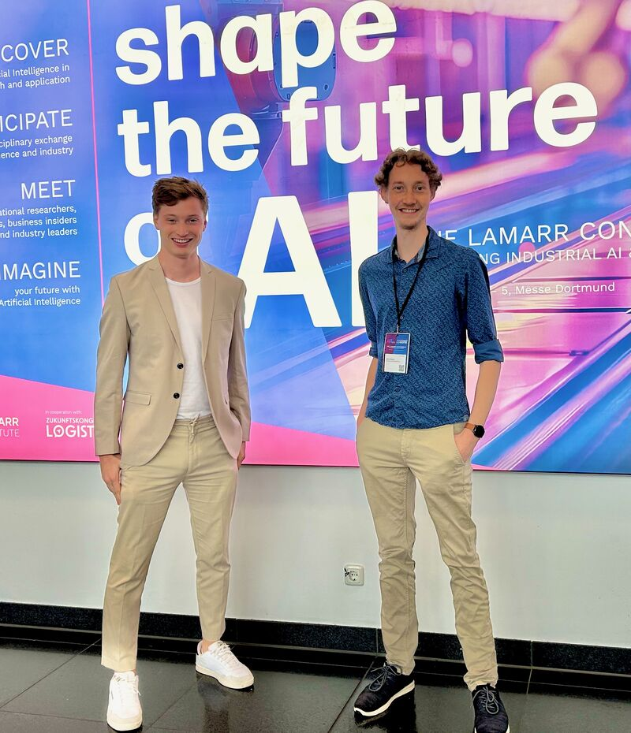𝗧𝗟;𝗗𝗥 ⏱️
LinkedIn Post
• Attended Lamarr-Institut 24 Conference
• Reconnected with colleagues and made new acquaintances
• Insights from various talks on GenAI, LLMs, and AI developments
Intro 🥰
• Together with my great colleague Lukas Pfahler, PhD, we attended the Lamarr-Institut 24 Conference, where research, industry, business, and politics came together.
• It was a pleasure to reconnect with many of my companions from the Lamarr-Institut and Rheinische Friedrich-Wilhelms-Universität Bonn and make new acquaintances, gathering new insights and impressions.
My Highlights 💡
• I was delighted to see my former PhD supervisor, Jens Lehmann, now Principal Scientist at Amazon AGI and Professor at Technische Universität Dresden, present on how GenAI can be implemented by LLMs and Retrieval-Augmented Generation (RAG) based on Knowledge Graphs to create better retrieval and factual correctness. I'm thrilled to see how my PhD topic and current research and development continue to grow together!
• My second PhD supervisor, Stefan Wrobel from the Fraunhofer IAIS, joined with Magnus Sahlgren from AI Sweden showcased the possibilities of LLM developments in Europe and the potential for e.g. OpenGPT-X. I'm eagerly looking forward to the model and hope it will fulfill its promises of performance. It would be excellent to see this competence and open-source claim take root in DE and EU.
• Rebecca Nugent Carnegie Mellon University delivered a thought-provoking talk on how we're currently in an AI bubble, with people outside of that bubble having a mix of disinterest, reservations, and concerns on AI that need to be addressed.
Further Highlights in Fast Forward ⏩
• Asja Fischer from Ruhr-Universität Bochum provided exciting insights into the cat-and-mouse game of identifying GenAI content.
• Milica Gasic from Heinrich-Heine-Universität Düsseldorf explained how to identify uncertainty in LLM predictions (potential hallucination).
• Mehdi Ali and Max Lübbering, PhD presented a cool pitch on an open-source framework approach to train LLMs from scratch.
• We had a great exchange with David Jurgens from the University of Michigan on the topic of alignment and system prompts.
• Sebastian Thrun created a TED-like talk supporting me and others on how to address (Gen)AI advances to a broad audience.
• The startup pitch format of the Digital Logistics Award was a pleasure to watch, Great pitches!
I'd like to extend my gratitude to Comma Soft AG for supporting us in attending this event. I would like to thank the conference hosts for organizing such a fantastic event. Through the exchange, we've verified that we're focusing on the right approaches within our GenAI approach Alan.de ❤️
#ArtificialIntelligence #GenerativeAI #Lamarr #NRW #LLM -
For more sustainability transparency in GenAI! Share your knowledge and reduce energy waste!
Emphasizing the importance of transparency and shared knowledge to enhance sustainability in GenAI.
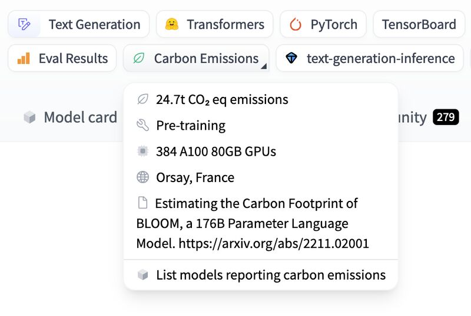𝗧𝗟;𝗗𝗥 ⏱️
LinkedIn Post
• GenAI involves very large models and significant training efforts
• Transparency can help share emissions and reduce energy waste
• Open source models can optimize future development
GenAI and Sustainability 🌱
• GenAI is implemented through very large models.
• The training can be substantial, such as the 15T tokens of LLAMA 3.1.
• However, these trainings represent only the final training and not all the attempts that led to the final model.
How Transparency helps 📚
• If the models are open or, in the best case, open source, many users and use cases can share the resulting emissions.
• It would also be interesting to see how often models are used for inference to compare the relative share of emissions.
• Open source would be important to share learnings for the next generation of models and thus reduce emissions by reusing hyperparameter optimizations.
Please share your findings and let's use our resources and energy wisely.
Our Paper 📄
In our paper “Ethical and Sustainability Considerations for Knowledge Graph based Machine Learning,” we highlight which sustainability and ethical optimizations are possible when working with hardware-intensive Artificial Intelligence approaches. Link: https://lnkd.in/eJjATkTQ
What are you doing to bring AI, ethics, and sustainability together? ❤️
#artificialintelligence #genai #llm #sustainability #aiethics -
Sustainable Air-Gapped On-Prem LLM Solution! How can we make GenAI available on almost any hardware, and how is it also available as a portable demo on our Alan Notebook
Exploring the development of a full-stack GenAI LLM solution that can run on a variety of hardware configurations, including a portable demo setup.
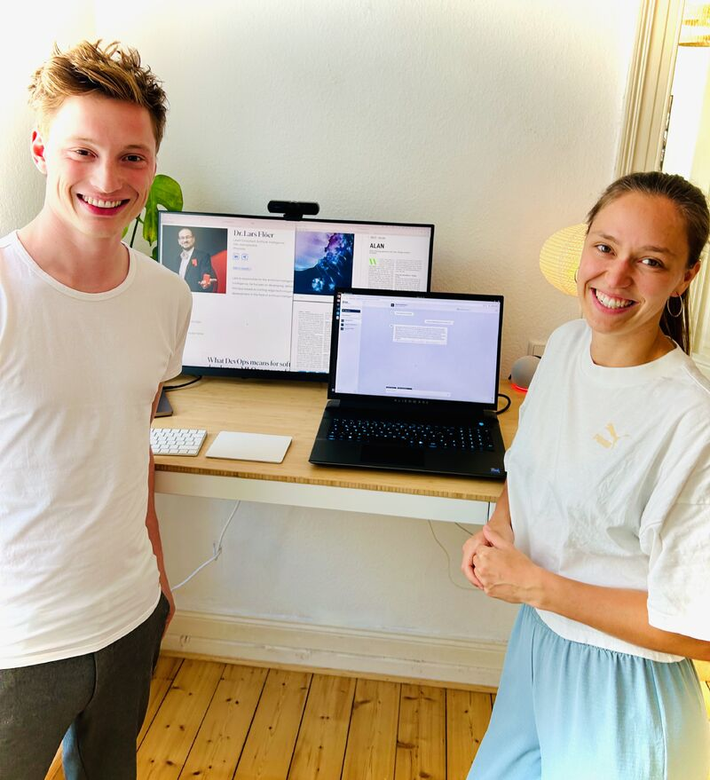𝗧𝗟;𝗗𝗥 ⏱️
LinkedIn Post
• Developing Alan, a full-stack GenAI LLM solution
• Hosted on German hyperscaler infrastructure
• Offers a smaller version, Alan-S-LLM
• Portable demo available on Alan Notebook
What We're Working on When We Talk About Alan R&D 👨🏼💻
• In a recent post, I introduced how we're developing Alan, a full-stack GenAI LLM solution.
• We host our solution within German hyperscaler infrastructure to deal with the requirements of multiple customer tenants and our large language models, including retrieval augmented generation pipelines.
• The requirements of our strongest Alan LLM require current top-notch Nvidia GPUs (Ampere+, 80GB VRAM), but we also offer a smaller Alan-S-LLM, which still has tremendous capabilities with fewer hardware requirements.
How to Shrink LLMs 🤖
• Models are smaller in dimensions like the number of transformer layers, heads, hidden dimensions, and other hyperparameters.
• Current smaller GenAI LLMs can be designed by model distillation and model pruning, which try to keep model quality high while reducing the number of parameters.
• The reduced number of parameters reduces VRAM requirements. Fewer parameters, especially fewer transformer layers, increase the throughput and inference performance as well.
• The reduction of bits used to represent each parameter of the LLM reduces the required total GPU VRAM.
Our Alan Demo Notebook 💻
• To demonstrate that our entire tech stack is capable of running entirely air-gapped and to showcase that we're truly capable of showing this on even a portable system, we developed the Alan-Notebook.
• This notebook uses the entire tech stack, which includes all the components that offer Multi-GPU Cluster setups, handling of users, RAG pipelines, and, of course, LLM text inference.
• The model behind is our fastest and most efficient Alan-S-Model. The notebook has limited hardware capabilities, especially within the GPU (16GB, Nvidia), but can still run the entire tech stack.
Further Reading:
• LLM Model Sizes: https://shorturl.at/6ZxMq
• Alan - Our Developer Journey: https://shorturl.at/PqLdE
• Full details of how infrastructure is scaled down by Dr. Laura Maaßen see https://lmy.de/eicOw
If you're interested in how we develop an entire scalable GenAI solution and you want to see some details into our R&D, follow me on LinkedIn and reach out to us. Thanks to my wonderful teammates Dr. Laura Maaßen and Lars Flöer, who made this Alan Notebook possible, and to the entire Alan Development Team Comma Soft AG for supporting this great project and product.
#genai #onprem #llm #alan -
Combining the Hugging Face Model Platform and Knowledge Graph trend analysis over time could improve GenAI research and reduce waste of energy!
Exploring the potential of leveraging knowledge graphs to analyze trends in evolving models for better GenAI research and efficiency.
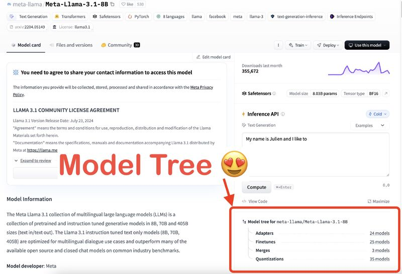𝗧𝗟;𝗗𝗥 ⏱️
LinkedIn Post
• Leveraging knowledge graphs for GenAI trends
• Identifying high-performing models and best practices
• Potential for a crowd-sourced GenAI cookbook
Traversing the possible huge knowledge graph of evolving models... It would be interesting to see trends within this graph, such as which families and architectures are trending 📈. I'd love to explore over time what approaches for fine-tuning, datasets, or even the number of transformer layers/heads, etc. create high-performing and efficient models 🌱. So we could create a crowd-sourced best practice GenAI cookbook ❤️👩🏽🍳. Please let me know if you are already working on it Thomas Wolf 🤗 -
What is the perfect approach to adjust an LLM to your GenAI use case?
Exploring various methods to customize LLMs for specific GenAI use cases, ranging from simple to complex approaches.
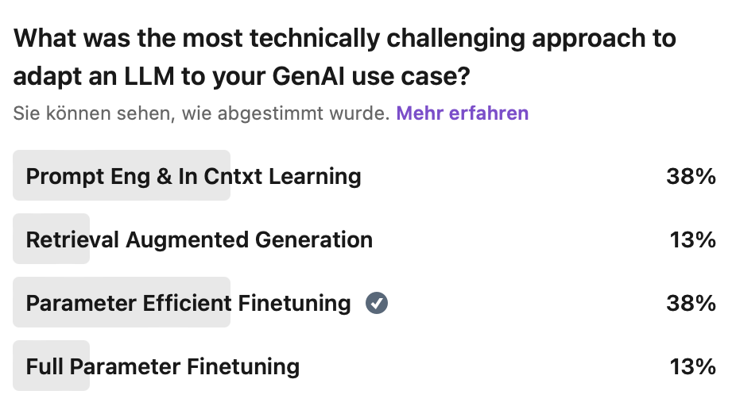𝗧𝗟;𝗗𝗥 ⏱️
LinkedIn Post
• Various ways to customize LLMs for specific use cases
• Approaches vary in difficulty and complexity
• Pros and cons of different methods
• More dimensions to improve GenAI use cases
Prompt Engineering & In-Context Learning: Manually enriching the prompt with information to guide the model’s prediction into desired behavior.
Retrieval-Augmented Generation: Automatically retrieving context that is appended to the prompt on the fly after being retrieved through vector database similarity search and reranking.
Parameter-Efficient Finetuning: Training only a subset of the model's parameters while keeping others unchanged.
Full Parameter Finetuning: Training all parameters.
These approaches have pros and cons in terms of (and not limited to):
• Catastrophic Forgetting
• Memory Load
• Maximum Context-Size limits
• Hallucinations
• Response Time
There are also more approaches and dimensions to improve GenAI Use Cases like:
• Guardrails
• Structured output
and many more.
What are you working on, and which field are you interested in to see how we are working on it?
We at Comma Soft AG implement these and more approaches into our own Product Alan.de and support also other GenAI Use Cases through these approaches.
Reach out to me 🤗 and follow me for more content ❤️
Hashtag#artificialintelligence Hashtag#genai Hashtag#llm -
These results give me hope for sustainable AI 🌱
I'm impressed by some of the recent advances in the field of "small" open-weight Language Models (LLMs).
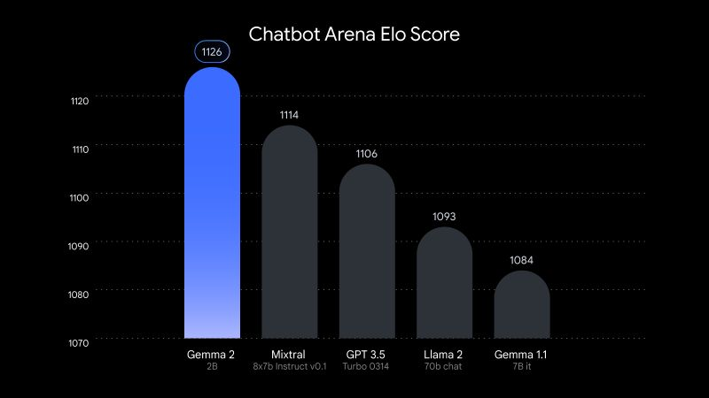𝗧𝗟;𝗗𝗥 ⏱️
LinkedIn Post
• Increased documentation supports reproducibility
• Data quality improves model performance
• Model distillation reduces hardware needs
More Documentation 📚
They're accompanied by increased documentation, as seen with efforts from Apple and Meta, which support reproducibility and reduce wasted effort and energy on less promising pre-training and fine-tuning iterations.
Data Quality as Chance 🔎
They demonstrate that a focus on data quality can improve model performance, as evidenced by Phi-3. However, it's also clear that the total number of tokens contributes to improvements, as seen with LLAMA3(.1).
Model Distillation 👩🏽🔬
Model Distillation has been effective in reducing total hardware requirements and inference time, which saves energy and resources. It will be interesting to see how quickly distilled models like Gemma2 can outperform 6-month-old state-of-the-art models like LLAMA2.
I appreciate the efforts to decrease hardware and energy demands while still providing helpful model responses.
Hashtag#artificialintelligence Hashtag#genai Hashtag#sustainableai Hashtag#llm -
LLMs: Big vs Small. Bigger is Better!? OR Let's not waste energy!?
The AI community is abuzz with debates over the efficacy of large versus small language models. Both have their own merits and limitations.
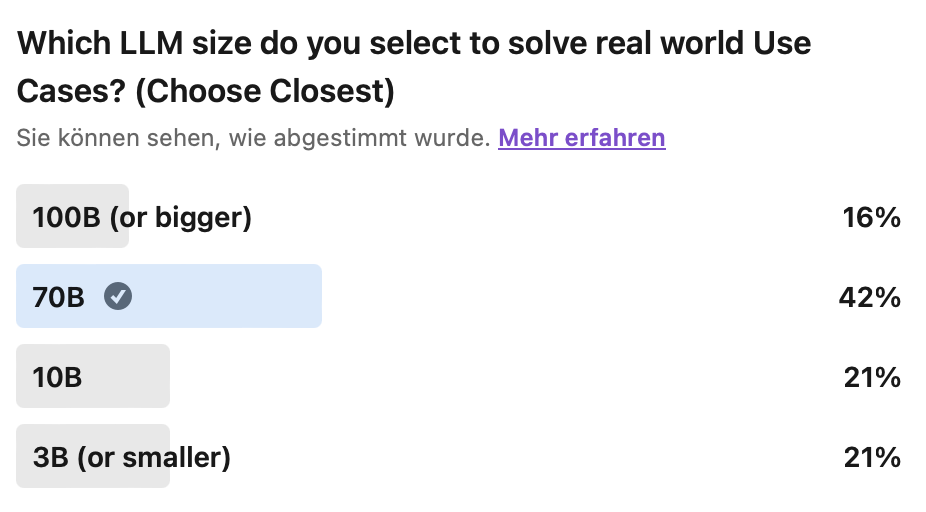𝗧𝗟;𝗗𝗥 ⏱️
LinkedIn Post
• AI community debates model sizes
• Massive models vs. smaller, efficient models
• Insights and future predictions
• Links to further reading
✨ The AI community is buzzing with discussions about model sizes:
• Massive models like Mistral (8x22B), LLAMA3 (400B), and Grok (314B) are turning heads.
• Smaller yet mighty models like Phi 3, LLAMA3 (8B), and Nemo (12B) are proving their worth.
🔍 Key insights:
• Smaller models can compete by focusing on smarter training and pre-tuning methods.
• Benchmarks are helpful but not flawless in measuring a model's value.
• The mystery remains: why might a model with 61 transformer layers outperform one with 60?
• Balancing model architecture is crucial due to the increasing complexity as models scale up.
🔮 Future predictions:
• Will we see a standard model size emerge, or will there be a variety for different model size clusters for different platforms (mobile, single GPU, multi-GPU clusters)?
Links 🔗
• Reason LLAMA Model Sizes: https://lnkd.in/dHRSJXgm
• ALAN - GER-hosted GenAI tool developer story: https://lnkd.in/ey8aZTjB
• Problems with benchmarks: https://lnkd.in/dmBeQZ_j
🌐 What is your experience?
• Which model size do you find most practical for real-world problems?
📊 I'm keen to learn from you:
• What size models are you working with?
• Share your preferences in this survey and let's discuss the optimal balance in model scaling.
• What do you think how big is the gpt4o turbo?
• Join the conversation and let's navigate the evolving landscape of machine learning together ❤️
At Alan (by Comma Soft AG), we recognize the need for variety:
We provide models of various sizes to align with your unique requirements for capability and speed.
#MachineLearning #AI #ModelSize #Innovation #GenAI #SustainableAI -
The BIGGEST RISK for GenAI? Interesting News from US court... Who owns the training data and which generations must not be generated? Impact of GitHub Copilot under the Digital Millennium Copyright Act (DMCA)
Exploring the legal implications of GenAI, particularly in light of recent US court rulings and the challenges associated with training data and generated content.
𝗧𝗟;𝗗𝗥 ⏱️
LinkedIn Post
• Capabilities and applications of GenAI
• Debates on the use of training data and distribution of generated content
• Legal prohibitions and discussions
• Challenges in attribution and data relevance
• Recent court rulings and their impact
GenAI
With GenAI we are capable of doing amazing things
🎼 We can generate songs to our preferences
📝 Have texts written in a certain style
🎨 Paint pictures in a certain artistic style
🗣️ Synthesize voices according to models
Fields
There is currently a big debate about how far:
1️⃣ The training data should not have been used
2️⃣ To what extent the generated "outcomes" should not be distributed
Rules
The following are prohibited or under discussion:
• The generation and reproduction of company logos
• Works of art may also no longer be created in the specific style of certain modern artists
• In the case of voice synthesis, there is a complaint as to whether the voice is too close to that of some popular actress
• In the case of text responses, content from paywall-protected news articles was generated without further reference
• GitHub code of others is reproduced without mentioning the source license
Challenge
Attribution is extremely difficult to impossible with naive transformer LLM architectures. Also, the total amount of data on the Internet is extremely relevant for the model's performance. I am curious to see how it turns out.
Court
GitHub Copilot and OpenAI at court: there was a surprising ruling for me in the area of copyright regarding Digital Millennium Copyright Act (DMCA), which might change the field of GenAI 👩🏽⚖️
Wondering
I also wonder whether writing styles are forbidden:
"Write a dialog between two characters talking to each other like Jar Jar Binks and Yoda". Should this be allowed, is writing style like this protectable? 😈
What do you think? Where should the copyright limit be? How do you interpret the current landscape of cases in court? Share within the comments 🤗
Within our R&D team at Comma Soft AG, we facilitate a tech stack that supports proper referencing of used sources 🤖
Join the conversation and follow me for more content ❤️
Hashtag#artificialintelligence Hashtag#llm Hashtag#genai Hashtag#copyright Hashtag#risk
LinkedIn Post -
GenAI, what is plagiarism? Its Impact on Science. How should it be handled? What is your perspective?
Discussing the implications of GenAI on scientific work and the thin line between acceptable use and plagiarism.
𝗧𝗟;𝗗𝗥 ⏱️
LinkedIn Post
• Use of GenAI in scientific work
• Acceptable vs. debatable vs. critical usage
• Questions and concerns about plagiarism
• The pressure on researchers and students
• Opportunities for better research
Current Situation 🏫
However, I see ChatGPT being used in many researchers' work to assist in the creation of (scientific) texts. Often it is also controlled or prohibited by the controlling institutions (schools, universities, paper-venues) to use such tools.
Sample GenAI-LLM usage I think is ok (IMHO) 🤗
I wonder how the following behavior in ChatGPT should be dealt with:
• You ask Chat GPT if it would correct commas and or capitalization in an existing text as Office Suites do
• You ask for rewording from passive to active or better and more varied synonyms such as in Grammarly which is also "GenAI"
• You can have texts translated to make quotes more easily accessible in the desired language like DeepL or Google Translate.
These are all uses of Chat-GPT that I can imagine in the context of scientific work that was previously possible without "ChatGPT" and, in my opinion, doable with other tools without having to speak of plagiarism.
Debatable usage 🤷🏼♂️
• You are generating the abstract for your finished paper while correcting and polishing it manually yourself afterwards.
More critical usage 🧐
• Write an entire text, paper/exercise/... simply based on a very refined prompt with LLM+RAG+Response-Verification and hand it in as your own work.
My Questions 👨🏼🎓
I just ask myself how I would have worked if the tools were there or how I would want to deal with these kinds of situations as a lecturer.
• What should be allowed?
• What goes too far and falls under plagiarism?
• Which use of (GenAI) tools needs to be regulated and documented and how finely tuned?
• How do you think scientific work, reviews, and publications will change for better or for worse?
• Does your institution at least clearly regulate how (GenAI-)Tool usage is possible
Current Problem 🫣
I see lots of pressure on students and research scientists to hand in their work or to publish papers. So they are tempted to use available tools. Not every GenAI will imply plagiarism but regulations are not clear as far as I have seen.
The Chance to Research 👨🏼🔬
We have the chance to use GenAI for better research: acquire good information over RAG and Vector Search, Translate texts into our mother tongue, and Rewrite in shorter or clearer language or even more accessible language.... Chat interact with papers you have questions to....
We at Comma Soft AG develop GenAI solutions and also actively using such tools to create great solutions while being aware and careful about possible plagiarism issues.
#genai #plagiarism #research #artificialintelligence
-
Adjust GenAI responses towards more ethical behavior possible through system prompts!? Do you trust in such LLM-chat prepended pamphlets?
Exploring the potential and challenges of using system prompts to guide LLM behavior towards ethical outputs.
𝗧𝗟;𝗗𝗥 ⏱️
LinkedIn Post
• GenAI chat interactions often include system prompts
• System prompts aim to guide ethical LLM behavior
• Challenges exist in ensuring compliance and formulation
• Questions on designing and revealing system prompts
Background 🤓
• GenAI is often used via chat
• We enter prompts in the Chat UI
• Under the hood, the Chat programs usually add a system prompt
System-Prompt 💬
• This system prompt should control the behavior of the LLM output
• The system prompt complements other behavioral optimizations such as alignment and other guardrails to improve ethical GenAI response
• The system prompt can describe behavior such as identity or desired behavior
Problem 🥴
• There is no guarantee to what extent the system prompt will be followed
• It is unclear what details should be included in the system prompt
• It is not possible to prevent the model from revealing the system prompt
• It is unclear how best to formulate the system prompt
Questions 🤔
• How do you design system prompts, and what are yours?
• Do you think system prompts help to ensure the model's behavior?
• Do you think chat UIs should not reveal the system prompt and how would you achieve this?
Further Reading 📖
• Change Alignment of LLMs: https://lnkd.in/eWS-VZCD
• LLM Behavior: https://lnkd.in/ed52RBNe
• My current LLM Developments: https://lnkd.in/ey8aZTjB
We at Comma Soft AG develop GenAI solutions including optimizations of LLM responses through various components where also the design of system prompts plays a role.
#artificialintelligence #responsibleai #llm #alan #aiethics -
Alternative to GenAI creativity? Watch and try out these fun Evolutionary Algorithms. Problem-solving without GenAI and SGD-based approaches explained!
Exploring Evolutionary Algorithms as an alternative to GenAI for problem-solving, using a fun 2D vehicle race example.
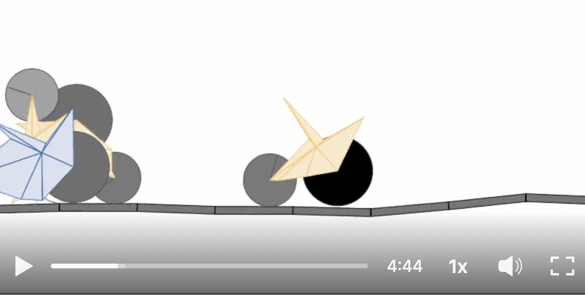𝗧𝗟;𝗗𝗥 ⏱️
LinkedIn Post
• There is hype around GenAI and LLMs
• Evolutionary Algorithms (EAs) offer an alternative
• A fun example of EAs using a 2D vehicle race
• Steps involved in EAs explained
Background ☺️
• Within the field of AI is a GenAI and LLM Hype
• These are not always the best approach to solve a problem!
• There are interesting algorithms optimizing their behavior entirely differently: e.g., Evolutionary Algorithms (EA).
• Today I want to show you a fun EA introduction based on a 2D vehicle race "problem"
Evolutionary algorithms (EAs) explained 👨🏼🏫
Problem 🏁:
• What is the best vehicle configuration to drive over a 2D surface?
Vehicle Configuration = Genome 🧬:
• Shape
• Wheel size
• Wheel position
• Wheel weight
• Chassis weight
Key EA Steps on the vehicle race example 🔢 :
1) Initialization: Generate a set of vehicles with random characteristics (genome) called population
2) Fitness Evaluation: Check how far they have got on the randomly generated surface.
3) Selection: Select a subset of the best vehicles from the population to reproduce and form the next generation, e.g., by tournament selection or rank selection.
4) Crossover (Recombination): Combine the genetic information of two or more selected vehicles to create new offspring. E.g., average two good car genomes or randomly select the information of each...
5) Mutation: Randomly modify the genetic information of some individuals in the population to introduce new variations and prevent convergence to a local optimum.
5) Replacement: Replace the least performing vehicles with new offspring generated through crossover and mutation.
6) Termination: Repeat until a stopping criterion is met: the needed distance, number of iterations, or convergence threshold.
7) Output: best vehicle, representing the near-optimal solution
My Perspective 🤗:
• Be aware that there are a multitude of possible algorithms to use
• We at Comma Soft AG do not trust any hype and select the appropriate algorithms for the respective problem
Credit ❤️
• To the development team of the interactive EA vehicle race
• I'd also like to thank Hajira Jabeen and Jens Lehmann for their great support in my MT project where I worked on EA and KG for the creation of novel recipes
Links 📖
• EA vehicle race, try it out yourself: https://lnkd.in/e2Ew3e7D
• Extract from my MT in a short paper: https://lnkd.in/e8VRVe_k
• My current GenAI work: https://lnkd.in/edNx8uKh
Questions
• How would you solve this "race" problem? EA, GenAI, RL, ...?
• Do you want to see more non-GenAI content?
• Have you ever used EA to solve a problem?
Stay tuned by following me here on Linked ❤️ -
Do we need another GenAI solution? How & why we developed a full-stack GenAI LLM+RAG tool called Alan. A sneak peek at what I am currently working on.
An overview of the motivations and technical aspects behind developing our own GenAI solution, Alan, at Comma Soft AG.
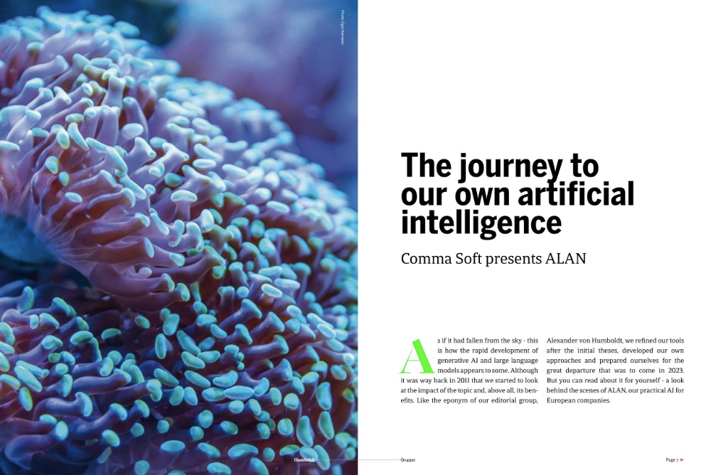𝗧𝗟;𝗗𝗥 ⏱️
LinkedIn Post
• Diverse GenAI solutions exist
• Unique motivations for developing our own tool
• Technical advantages of our solution
• Questions on custom development vs. wrappers
Current Landscape: 🏞️
• There are a variety of GenAI solutions out there
• Many models from big tech companies work increasingly well for certain use cases.
• And we have launched our own solution. Why?
Our technical perspective: 🤓
• Data-Flow-Control: We want to know what happens to our data.
• Hosting: We host all our models and data on German servers.
• On-Premise: We can run our entire tech stack on-premise without any internet connection
• Our-own-Alan-Model: We optimize our models for dedicated use cases through further training (e.g., better language skills in GER)
• Knowledge-Enrichment: We decide for ourselves whether we want to make new knowledge available through our novel training approach or through our optimized RAG approach (as you might know there are plenty of options).
• Alignment: We have control over the alignment, i.e., to what extent the values and behaviors of the model match our expectations.
• SOTA: We always remain state of the art in a fusion of existing open source base models and in-house developments.
• Benchmarking: We use benchmarks and measures we trust.
With a great team at Comma Soft AG, it's enjoyable to develop such a helpful tool ❤️ In the appended PDF we show an extract of the full text story of our ALAN development journey 📖
Questions: 🤔
• How did you decide if you want to develop something yourself or use more kind of wrappers?
• How important is the management of sensitive data for you and where are your servers located?
Literature: 📚
• Here is the full Humboldt Travel Report with more background stories: https://lnkd.in/emwvpQsW
• Adjusting Model Alignment https://lnkd.in/eWS-VZCD
• Model Selection https://lnkd.in/duGzWugD
• Model Benchmarking https://lnkd.in/dmBeQZ_j
For more GenAI LLM content and R&D discussions, follow me on LinkedIn. If you want to try out Alan, reach out to me: http://alan.de
#artificialintelligence #llm #machinelearning #handson #genai -
Will we reach AGI, and if so, by transformers-based architectures? Share your perspective!
Exploring the potential of transformers-based architectures in achieving Artificial General Intelligence (AGI) and the ongoing debate surrounding it.
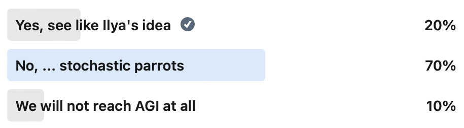𝗧𝗟;𝗗𝗥 ⏱️
LinkedIn Post
• GenAI's impact on AGI discussions
• Technical challenges with transformer-based architectures
• Optimistic yet cautious approach at Comma Soft AG
Why GenAI boosted the discussions around AGI! 🤯
• Several institutions are claiming that our GenAI-based architectures are a key step on our way to AGI.
• On the other hand, we are facing major technical issues with those systems that seem to not allow AGI by design: see stochastic parrots.
• But still, some, like Ilya Sutskever claim that transformer-architecture AIs can reach AGI-like capabilities as it does not only learn next token prediction, it learns a projection space for real-world understanding.
Further links 📖
• Critics on GenAI/LLMs: https://lnkd.in/e2JqstpW
• Ilya (OpenAI) Interview: https://lnkd.in/etu4EKQT
We at Comma Soft AG are developing GenAI models being optimistic about the opportunities and seeing that GenAI is already helping in our tools and pipelines while being aware of all the current issues by design of these approaches (e.g., LLM hallucination) we are actively tackling.
Share your perspective in the comments 🤗
For more content, follow me on LinkedIn ❤️ -
Do you differentiate AI Ethics principles between AI/ML fields like GenAI/LLMs or Knowledge Graph-based ML? How do we deal with so-called facts on the internet as training data?
Exploring the nuances of AI ethics across different AI/ML fields and handling internet-based training data responsibly.
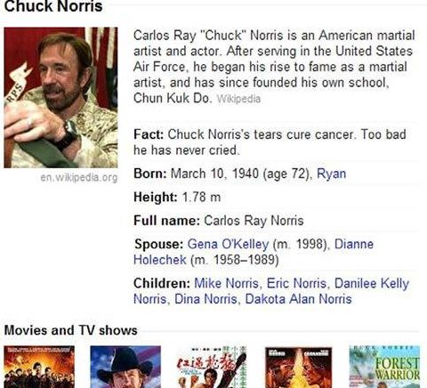𝗧𝗟;𝗗𝗥 ⏱️
LinkedIn Post
• AI ethics principles across different AI/ML fields
• Personal background and perspective on AI ethics
• Recommendations and further reading on AI ethics
• Questions to ponder on AI ethics practices
My Background and Perspective 👶
• AI ethics is always the same. No matter if GenAI, Computer Vision, or Knowledge Graph-based ML!
• In recent years, I had three main focus areas in the field of AI: My Ph.D. passion in Knowledge Graph-based Machine Learning, before a focus on computer vision, and most recently GenAI with a focus on text
• It was always important for me to take a holistic approach. This includes ethical and sustainability aspects in particular.
• In our paper on Ethical and Sustainability Implications for Knowledge Graph-based Machine Learning, we have elaborated on topics I also recently found in the literature on LLM AI Ethics [1,2].
• I see a chance that AI areas majorly align in the AI Ethics dimensions, so we can easily learn from each other and share best practices
Recommendation 👍🏽
• At this point, I recommend a well-known but still very valid paper as an introduction to LLM ethics for those who may not yet know it or are new to the field: On the Dangers of Stochastic Parrots: Can Language Models Be Too Big? by Emily M. Bender, Timnit Gebru, Angelina McMillan-Major, Shmargaret Shmitchell [1]
Further Reading 📖
[1] On the Dangers of Stochastic Parrots: Can Language Models Be Too Big? https://lnkd.in/eGt_UYci
[2] Ethical and Sustainability Considerations for Knowledge Graph-based Machine Learning https://lnkd.in/eJjATkTQ
I hope that all those who develop such powerful tools are aware of their responsibility, especially in the context of dual-use, to use their skills in a reflective manner.
What is your perspective? 🤔
• Do you see differences in the overarching AI Ethics depending on the AI field?
• What are your preferred AI Ethics Survey Papers?
• Where do you consider AI Ethics in your daily R&D AI work?
• What real issues could arise in ML models through the Wikipedia Chuck Norris fact (see image)?
I appreciate having a GenAI R&D team Comma Soft AG that is aware of the AI ethical implications of our work.
For more content, follow me on LinkedIn or reach out to me over PM ❤️
#AIethics #artificialintelligence #llm #genai #knowledgegraphs -
What expectations do you have regarding the values and norms of your GenAI chat assistants? Highly sensitive topic in the LLM space! My take...
Exploring the ethical considerations and expectations surrounding the values and norms embedded in GenAI chat assistants.
𝗧𝗟;𝗗𝗥 ⏱️
LinkedIn Post
• LLMs generate text based on training
• Alignment and finetuning influence behavior
• Ethical considerations in different languages
• Need for a holistic view on model behavior
Background Information 🤓
• LLMs are GenAI models that generate texts
• The text-generating behavior is based on the LLM's training
• Chat LLMs are trained in three phases
• Pretuning on large (filtered) text corpora
• Finetuning on, for example, instruction tuning data
• Final alignment to encourage preferred responses
Some classic methods for adapting LLM behavior 👮🏼
• Filter certain content, for example, NSFW, from the pretuning data
• Try to induce certain behaviors that we consider appropriate through alignment
• Craft system prompts in which we try to give the Chat Agent specific character traits
Possible Issues 🫣
• Would you expect different values and norms depending on the language in which you are prompting? Apart from alignment, culture and language may correlate with each other in the respective token spaces even in pretraining.
• Do LLMs map all languages and the values they contain into different or the same space?
• When using LLMs, we should not only pay attention to the performance of the models but also to the behavior (in other languages and token spaces)
• Does alignment-finetuning in one language resolve subjectively problematic behavior in other prompt languages?
• Who should decide about norms and values embedded within GenAI approaches? And do you check those details when selecting a pretuned model?
Further Reading 📖
• How to break Alignment of LLMs: https://lnkd.in/eWS-VZCD
• Issues with LLM Benchmarks: https://lnkd.in/dmBeQZ_j
• LLMs as Stochastic Parrots: https://lnkd.in/eGt_UYci
• Ethical and Sustainability Issues of KG-based ML: https://lnkd.in/ejfb4qNC
We at Comma Soft AG develop Large Language Models and GenAI pipelines with a holistic perspective on model behavior and performance. Please share your favorite papers or simply your experiences with this topic! For more AI topics outside the daily random model updates, please get in contact with me or follow me here on LinkedIn. ❤️ -
Be careful when you speak of Open (Source) GenAI. Why OpenAI and Meta (shouldn't) use the word Open within their GenAI efforts?
Examining the implications of using the term "Open" in the context of GenAI by organizations like OpenAI and Meta.
𝗧𝗟;𝗗𝗥; 🚅
LinkedIn Post
• Open Source is a huge and important field in computer science and AI
• The word "Open" is used widely within the GenAI field: OpenAI, Open Source LLMs
Background of term open in OpenAI and Open (Source) LLMs 🧑🏽🏫
• Open source libraries accelerate and improve the IT field including GenAI
• Many GenAI models are available on model hubs like Hugging Face
• Often those models like Meta LLAMA-3 are called open-source LLMs
• OpenAI provides the most successful LLM GPT4
• OpenAI does not release their model weights or creation details openly
• Elon Musk being a former founder of OpenAI sued them (maybe also cause of other reasons) for being less open than initially founded for
Why OpenAI and Meta think it is okay to use the term "Open" 🤓
• Sam Altman CEO of OpenAI claims in an interview that "Open" is valid as ChatGPT made GenAI/LLMs accessible to the world openly
• Meta claims open source as their LLM LLAMA-3 weights are freely downloadable
Issues 😓
• No one could reproduce OpenAI or Meta's Models, so they are not open-source
• This missing open source and open research is an issue for reproducibility, fairness, security, democratization of tech, and environmental impact
My Take (IMHO) 🤗
• OpenAI can take credit for the hype around LLM-based GenAI as they truly opened access to this tool through a (partial) free open chat interface.
• Most impactful models on HuggingFace like Meta's LLAMA-3 should be considered being OPEN WEIGHT and not open source. Also, there are sometimes issues with its licenses: https://lnkd.in/dtStQSdn
• Truly open source would mean code can entirely reproduce the models
• Still, these open-weight models accelerate GenAI/LLM developments
Questions? 🤔
• How do you see the possible confusion of the word "open" initially coming from open-source in GenAI efforts of OpenAI and Meta LLAMA-3 open-weight model?
• Do you use any truly open-source LLM?
For more content, follow me or our team at Comma Soft AG on LinkedIn ❤️
#artificialintelligence #llm #opensource #llama #genai -
Thanks to the Open Source Community for all their efforts! Greetings from PyCon 2024
Expressing gratitude to the open-source community and sharing experiences from PyConDE & PyData Berlin 2024.
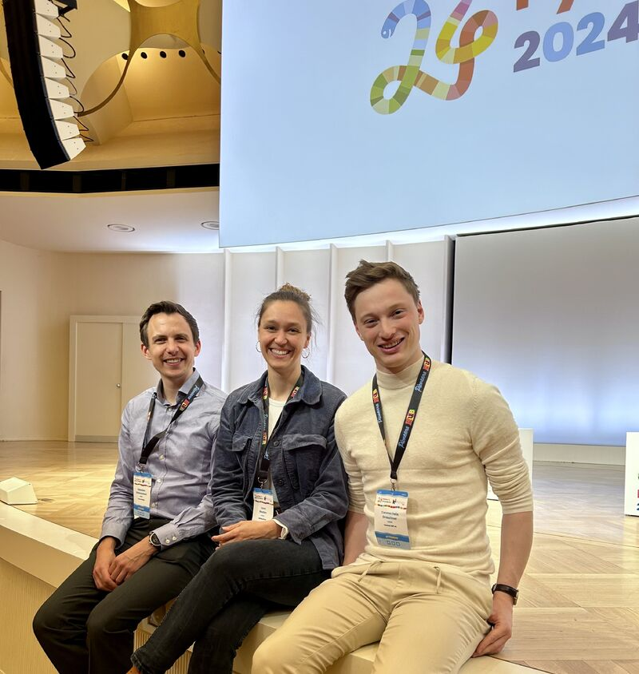𝗧𝗟;𝗗𝗥 ⏱️
LinkedIn Post
• Trip to PyCon with colleagues
• Attended insightful talks in various AI fields
• Appreciation for open-source community
• Gratitude to all contributors and supporters
Trip to PyCon 🚅
With my great colleagues, Dr. Laura Maaßen and Sebastian Schönnenbeck, from our Data Science and GenAI R&D teams, we are excited to attend PyConDE & PyData Berlin.
Great Talks 🎤
We attended so many inspiring and insightful talks in the fields of Machine Learning, MLOps, GenAI, LLM, AI Ethics, and open-source software development.
My Take 🤗
• I greatly appreciate the efforts of the open-source development community!
• Having all these open-source tools and freely available tech education is such a privilege!
• I am so glad to be in a field where so much great material is accessible online for free.
• At conferences like PyCon, you meet the people behind the projects, understand their challenges, and get inspired by their motivation that drives their efforts
Credit ❤️
• To all the Open Source Developers for their efforts in creating so many great and helpful tools.
• To all the open education supporters who create great material accessible to those eager to learn.
• To the PyCon Organising Team and all the Volunteers making this event possible.
• Thanks to Comma Soft AG for investing in R&D and funding us this trip with the opportunity to learn, discuss, and get inspired.
• And finally, thanks to Laura and Sebastian who supported me during the conference ❤️🩹. I needed help after knee surgery being at PyCon on crutches and equipped with a knee brace (sports can be dangerous 😉)
#PyCon #opensource #artificialintelligence #freeeducation -
Who will take care of truly low-resource languages? A good step towards more fair GenAI LLM pricing at OpenAI for Japanese-using people!
Exploring the challenges and recent developments in addressing low-resource languages within the GenAI landscape, with a focus on OpenAI's efforts for the Japanese language.
𝗧𝗟;𝗗𝗥 ⏱️
LinkedIn Post
• Issues with LLMs for low-resource languages
• Major challenges with different character languages
• OpenAI's new dedicated model for Japanese
• Concerns about AI ethics and inequality
Recap 🔁
• In a recent post, I described the issues of LLM solutions with "low resource" languages (see link below)
• Those issues are even more complex with languages using entirely different characters than the majorly used language English
The major issues ⚙️
• The same text needs more tokens to be represented
• More tokens need more time to be generated and are more costly e.g. in the OpenAI API pricing
• The quality of results is less good if a dedicated language is not in focus of model training.
• RAG use cases and also bigger task descriptions are more limited as fixed context size might limit the expression of details and context
News by OpenAI 📰
• Dedicated Model for Japan
• Focus on their tokens leading to improvements in quality and lowering effective costs (see link)
My Take 🤗
• I appreciate these efforts by Open AI
• We might need more such efforts towards further democratizing LLMs to different language heritages.
My Major worry (AI Ethics) 😓
• GenAI will provide major gains in economic efficiency and productivity
• The development of competitive models needs huge financial investments.
• This leads to the fact that already rich countries with their languages will have access to those technologies and will over proportionally make use of those efficiency gains.
• It is unclear to what extent low-resource languages with different characters are part of LLM training.
• I fear that this can further improve inequality as the invested resources (electric energy, hardware production...) and its footprint will influence our whole planet but its gains once again only "our" privileged lives.
Credit 😍
• To OpenAI for tackling this "known" issue of unfair and inefficient handling Japanese Language
• To all R&D Teams driving efforts towards low resource language GenAI
We @Comma Soft AG provide a B2B LLM as a Service with a focus on German and English Language and even though German is less complicated than other truly low-resource languages, it was already quite a challenge to reach high-quality results.
Links 📚
• Unfair Tokenizer: https://lnkd.in/edgPsdKz
• OpenAI Japan: https://lnkd.in/eSwnMgJv
Do you develop LLMs with a focus outside of the English Language?
For more content, follow me ❤️
#artificialintelligence #genai #llm #aiethics #japan #openai -
What is your preferred LLM family? And do you start with an already finetuned LLM? Why you have chosen this LLM? I love to hear your perspective!
Understanding the preferences and choices behind selecting specific LLM families and their finetuned variants.
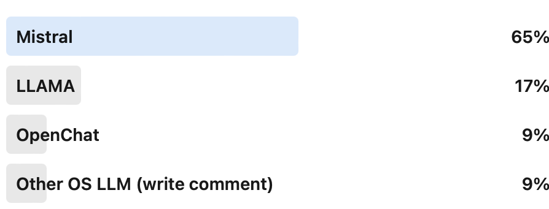𝗧𝗟;𝗗𝗥 ⏱️
LinkedIn Post
• GenAI for text implemented by LLMs
• Many open-source models available
• Continuous influx of new models
• Key foundation model families
• LLM-based GenAI pipelines at Comma Soft AG
Background Information ⚙️
• GenAI for text can be implemented by LLMs
• LLMs are partially open-source available
• Day by day new models come to market or are published on platforms like Huggingface
• Many of them rely on certain Foundation model families
• Some of them exist in different sizes
• We @Comma Soft AG develop LLM based GenAI pipelines (sometimes using OS models like the ones in the survey)
Further Reading 📚
• Special infos about LLM licenses: https://lnkd.in/dtStQSdn
• Reason for LLM sizes: https://lnkd.in/dHRSJXgm
• Broken alignment in LLMs: https://lnkd.in/eWS-VZCD
• How to keep track of all these LLMs: https://lnkd.in/duGzWugD
• Problems tokenizer language capabilities: https://lnkd.in/edgPsdKz
• Issues with LLM benchmark results: https://lnkd.in/dmBeQZ_j
If you need support with LLM R&D or simply want to chat, reach out to me and follow me for more content ❤️ -
NVIDIA Benchmark might be WRONG cause it states: You lose money AND LLM inference speed if you add more NVIDIA A100. This NVIDIA Benchmark is NOT reliable.
Analyzing the reliability of NVIDIA's benchmark results and the implications for LLM inference speed and hardware investment.
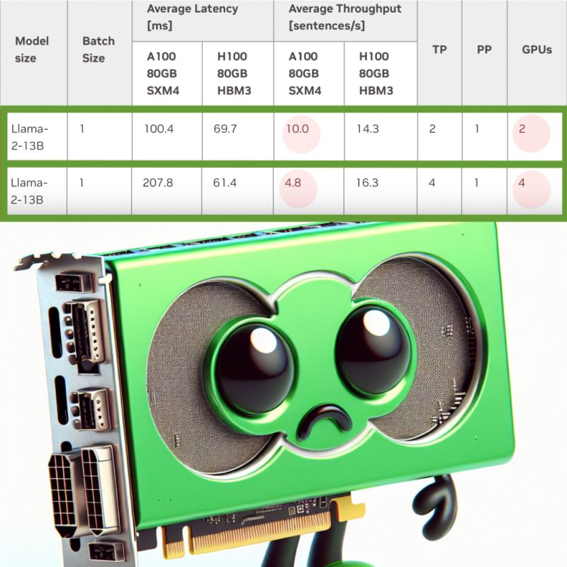𝗧𝗟;𝗗𝗥 ⏱️
LinkedIn Post
• Terms and background on LLMs and inference
• Strange findings in NVIDIA's benchmark results
• Concerns about the reliability of these benchmarks
• Questions and further reading on the topic
Terms 🏫
• LLMs are Large Language Models
• LLMs are a branch of Generative AI
• Those LLMs can be used to generate texts
• Text generation by LLMs is called Inference
• LLM Inference is faster on GPUs compared to CPUs
• Pretty common “LLM-GPU” is the NVIDIA A100
Background Story ⚙️
• We @Comma Soft AG are developing LLM pipelines
• Each use case has different requirements
• Sometimes Inference Speed is more important
• More Hardware performance can/should improve Inference speed
• To check out how much you can improve with more hardware, you can look into the scaling effect to see the trade-off between Inference speed and hardware costs
Weird Finding 🤔
• NVIDIA released a benchmark (link see below)
• It compares different GPU setups: 1, 2, 4, 8 GPUs for a common open-source model inference
• It states that when you increase from 2 GPUs to 4 GPUs you get half the throughput; from 10 sentences/sec to 4.8 sentences/sec for LLAMA-2 13B
My Take 🤗
• The NVIDIA Benchmark is broken or some hiccup with copy-paste of results
• Sentences/sec is a strange measure. Why not tokens per second which is more stable
• I found another strange issue with model sizes and performance on NVIDIA GPUs in this benchmark. see this link: https://rb.gy/5l8qqp
• It is a problem when you cannot trust benchmarks as this leads to reimplementing benchmarks or running them again which is a waste of resources and barely sustainable
• Benchmarks should be available open source to understand the measures and issues
Questions 🔠
• What do you think is the reason for this weird benchmark result?
• Do you have an idea why they measure in sentences per second and not in tokens per second?
• What are your preferred sources for benchmarks when it comes to Inference performance?
• What do you do to improve inference speed?
Links 📖
• NVIDIA AI Multi GPU Inference Benchmark: https://lnkd.in/e2sUsi63
• LLAMA 13B faster than LLAMA 7B? https://rb.gy/5l8qqp
• Mistrust in LLM Benchmarks! https://rb.gy/juw4pg
• Why do LLMs have sizes: 7B 13B, and 70B? https://rb.gy/zkpk5r
NVIDIA could you please fix it or comment on what was the issue/reason
For more content, brainstorming, and discussions, follow me or reach out to me 🥰 -
Too many LLMs?! How to keep track with all the Open Source Models? Identify the finetuned-masked LLMs and its position within the GenAI landscape!
Navigating the complex landscape of GenAI models can be challenging, but it's crucial to understand the foundational and finetuned models to make informed decisions.
𝗧𝗟;𝗗𝗥 ⏱️
LinkedIn Post
• The GenAI landscape is crowded with many models
• Keeping track of innovations and true effects is hard
• Transparency issues with many so-called "open-source" models
• Recommendations for navigating this landscape
The current LLM landscape 🤖
• Big GenAI LLM competition
• Lots of proprietary and open-source models
• Many Competitors: Big players like Google, Meta, and Microsoft; rising companies like Mistral and OpenAI, but also smaller institutions with foundation models or finetuned models
• Several release their model parameters openly on platforms like Huggingface
• Number of GenAI models are 500k+ (HF total), 60k+ (HF text generation)
Challenges with number of LLMs 🤯
• Difficult to keep track with so many models
• Most innovations are only documented with blog posts or arxiv papers
• True innovations and effects are barely reported
• Model leaderboards are flooded with finetuned models
• Not always clear which and why model architecture and training data are combined
My problem with current landscape 🤦🏼♂️
• Many claim to provide open-source models but do not disclose how those are constructed. What are the true training data and initial training datasets for pretuning, instruction tuning, and alignment?
• Which training hyperparameter setup was used and why
• Why does a specific model have exactly this combination of parameters like: number transformer layers, number heads, hidden-size, intermediate size
My recommendation 🤗
• Keep calm and check what is the true source foundation model
• Understand the architecture: e.g. more or less all of those are autoregressive Decoder-Only multilayer transformer networks
• Some introduce a novel architecture ideas like MoE (Mixture of Experts)
• Do your research, demystify LLM-landscape, and implement benchmarks you trust as we do @Comma Soft AG!
Further reading 📚
• LLAMA is not truly open source! https://rb.gy/8z8t3m
• Alignment can be destroyed by finetuning! https://rb.gy/ehf7s9
• Why are LLMs 7, 13, 70B large? https://rb.gy/zkpk5r
• My take on “We have beaten ChatGPT” https://rb.gy/juw4pg
• LMSYS Chatbot Arena https://rb.gy/f2ptbb
Credit ❤️
• R&D teams providing truly open-source models
• Accessible research contributions explaining effects of LLM optimization techniques
• LMSYS Chatbot Arena as an alternative to Open LLM leaderboard with focus on the original foundation models
How do you find the most promising OS foundation model for your UC?
For more content, brainstorming and discussions, follow me or reach out to me 🥰 -
Be careful when you are using LLAMA-2! Legal risks & Sustainability Implications due to LLAMA-2 is (NOT) Open Source.
Important considerations regarding LLAMA-2's legal and sustainability implications.
𝗧𝗟;𝗗𝗥 ⏱️
LinkedIn Post
• LLAMA-2's legal and sustainability challenges
• Not truly open-source according to OSD
• Technical implications of its license
• Meta's restrictions and their broader impact
What is LLAMA-2? 🦙
• LLAMA 2 is a Large Language Model by Meta
• Thanks to Meta its weights are openly available over e.g. Hugging Face
• Meta claims to provide LLAMAs as open-source Models
• LLAMA-2 is under the LLAMA license which has some restrictions [1]
Why is LLAMA NOT Open Source? [2] ❌
• Open Source means software under a license aligned with Open Source Definition (OSD)
• This includes no discrimination against persons or groups or fields of endeavor (OSD points 5 and 6)
• Meta’s license puts restrictions for commercial use (paragraph 2)
• Meta also restricts the use of the model and software for certain purposes (the Acceptable Use Policy)
Technical Implications! 👨🏼💻
IMHO, From a technical perspective the license statement $1V is another major challenge: “You will not use the Llama Materials or any output or results of the Llama Materials to improve any other large language model (excluding Llama 2 or derivative works thereof)”. I interpret this as a barrier if you use this model in combination with other LLMs in workflows like:
• AI as a judge in benchmark or evaluation pipelines
• Reinforcement Learning with AI Feedback - RLAIF
• Data Synthesis pipelines
• Model Distillation
Meta creates issues with the “open source” LLAMA-2 😢
• We will not reach true democratization of LLM application when usage is limited like this
• Those licenses can create confusion about what is open source in general, what is truly allowed, and what is not with those LLMs
• If we can barely reuse those pre-tuned LLMs we waste a lot of energy/resources spent on pretraining on more or less the same internet text corpus. 🌱
• And we still do not know how it is truly pre-trained, finetuned, and aligned. I’d appreciate more transparency here!
All of those statements are a part of our R&D journey @Comma Soft AG [3,4] developing LLM tools aligned with such challenging special licenses. I want to bring up the discussion about LLM usage and the meaning of open source and I am NOT giving legal advice.
What do you think about Meta's LLAMA-2 license? Will they change it in LLAMA-3? And what implications do you derive from this license?
Reading list 📖
[1] LLAMA-2 License
[2] Meta’s LLaMa 2 license is not Open Source
[3] Weird LLAMA benchmark
[4] Reasons for LLAMA sizes
#artificialintelligence #machinelearning #llm #aiethics -
The major players in GenAI are facing challenges with their Generative AIs. GenAI capabilities and security issues related to LLMs Tools • 37C3 Presentation
Challenges and security issues in GenAI and LLMs, highlighted at 37C3.
𝗧𝗟;𝗗𝗥 ⏱️
LinkedIn Post
• GenAI has immense capabilities
• Ethical and secure GenAI pipelines are crucial
• 37C3 presentation on security issues and exploitations
• Categories of threats and challenges in GenAI
Introduction 📖
GenAI has immense capabilities and can support a variety of processes. As developers, we have the responsibility to build ethical and secure GenAI pipelines. A noteworthy but easily overlooked presentation at the 37C3 event highlighted how tools from leading companies like OpenAI, Microsoft, and Google have been exploited through "Indirect Prompt Injections".
Threat Categories ⚠️
• Model Issues: Bias, offensive/dangerous responses, hallucinations, backdoored models.
• User as the attacker: Direct Prompt Injection, Print/Overwrite System Instructions Do-Anything-Now, Denial of Service.
• Indirect Prompt Injections: AI Injection, Scams, Data Exfiltration, Plugin Request Forgery.
Challenges 💪🏼
The development of security and safeguards for GenAI is still a "work in progress" and consists of various components 👮🏼
• Alignment is a fine-tuning approach aimed at training model behaviors to respond securely to critical prompts. Learn more here: https://lnkd.in/eWS-VZCD
• In Image GenAI, for instance, you can use a post-processing content filter. Check out this peculiar content filter behavior here: https://lnkd.in/eRaX9JuT
• An interesting set of additional threats and potential countermeasures were recently presented at the 37C3 event, focusing on Indirect Prompt Injections.
Credits & Links ❤️
• If you're interested in this topic, especially Indirect Prompt Injections, I highly recommend the 37C3 presentation. Watch the video on YouTube: https://lnkd.in/enjMee6S
• A huge thanks to everyone supporting the security of these GenAI tools and for their tireless efforts in educating and presenting their findings for free. Special thanks to Johann Rehberger
• As part of an exceptional team at @Comma Soft AG, we're developing pipelines with a holistic perspective on GenAI.
#generativeai #llm #aisecurity #aiethics #37c3 -
Not prompting in English?... You have Problems!! LLM Language Barriers • Democratizing GenAI and fair pricing
Exploring the challenges of using Generative AI with languages other than English and the implications for cost and performance.
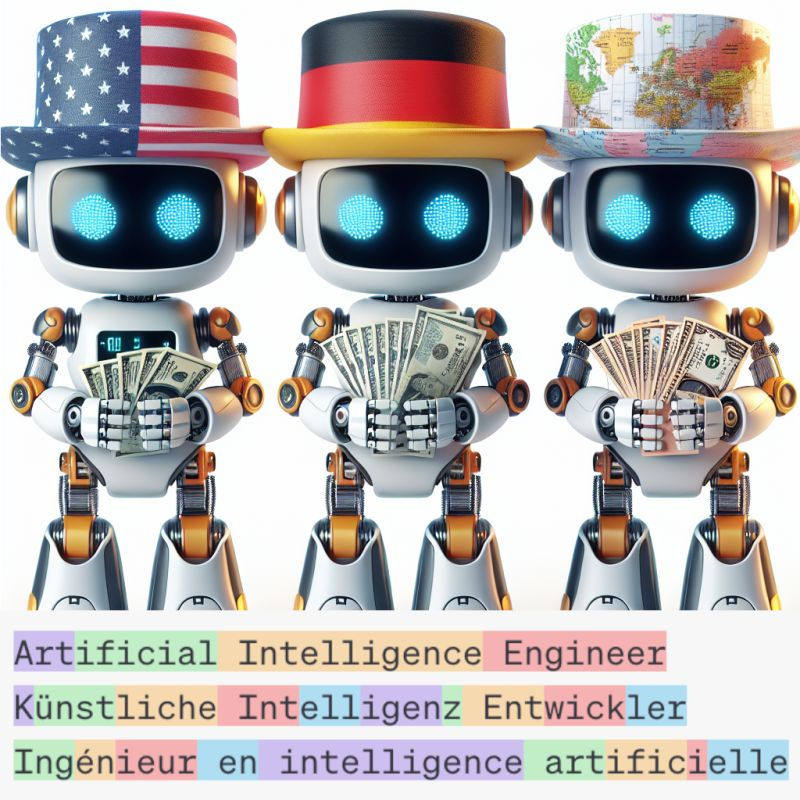𝗧𝗟;𝗗𝗥 ⏱️
LinkedIn Post
• Tokenizers and their role in LLMs
• Challenges of non-English prompts
• Efficiency and fairness in GenAI
• Recommendations for LLM pipelines
Tokenizer ✂️
• Generative AI Large Language Models process tokens
• Tokenizers are a preprocessing step of LLMs and cut prompts into subwords called tokens
• Tokenizers are optimized to efficiently compress text into a limited number of tokens
• Tokenizers are optimized based on large text corpora
• LLM pipeline hardware load grows based on number of tokens
• OpenAI GPT API charges per token
My findings & my takes 😰
• You do not prompt in English... You have Problems!
• You have to pay more if you are communicating in a language other than English as the tokenizer creates more tokens (see image)
• You'll likely get worse results from LLMs since they haven't seen as much text in your target language during pretraining
• You can fit less non-English text into an LLM, which has limited context length, meaning you can't solve similarly complex tasks with same LLM
• Using LLMs in German I am still quite lucky since German is reasonably well represented in most training data corpora and due to the relative similarity between German and English the difference in token decompositions is less pronounced. However, there are many languages (in particular those not using the Latin alphabet) for which the effects are much larger.
IMHO 🤗
• We will gather extraordinary efficiency gains through generative AI but we need to be careful that these gains are available to truly all people including those not using GenAI in English
• If you are building your own LLM pipeline as we do at Comma Soft AG, check out how the tokenizer and language model interact with your language. This might affect the costs or max context length of your text
• As the pricing per token is based on the technical costs to process a certain text, I can understand it from that perspective… But it is unpleasant as you pay more for the same prompt while likely getting worse results and having more limitations in prompt complexity e.g. when using RAG insertions
• Possibly LLMaaS could provide differently trained LLMs focused on regions and languages yielding better tokenizers and performance for lower resource languages
Related Topics 📚
1. Who should decide about alignment? especially when we speak about regional LLMs: https://shorturl.at/dwGIQ
2. What is fair pricing for content-filtered GenAI results: https://shorturl.at/aCF16
3. What is the best LLM for you: https://shorturl.at/bmuP8
4. Try out Open AI tokenizer: https://lnkd.in/eKhrP7qi
Hashtag#generativeai Hashtag#artificialintelligence Hashtag#machinelearning Hashtag#aiethics
For more content, brainstorming, and discussions, follow me or reach out to me ❤️ -
Ever wondered about open source LLM sizes: 7B, 13B, 70B?
Where do those model sizes come from?... My findings!
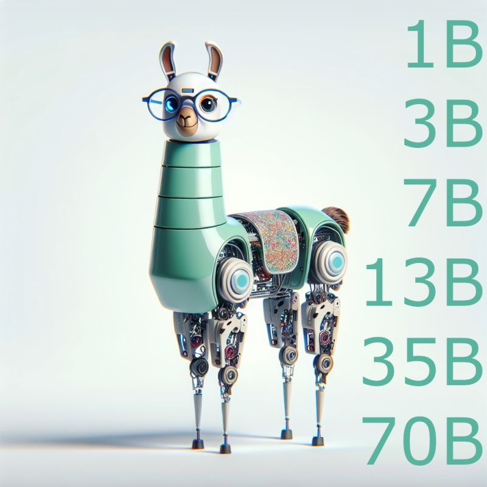𝗧𝗟;𝗗𝗥 ⏱️
LinkedIn Post
• Open-source LLM alternatives to AIaaS
• Hugging Face as a source for open-source models
• Many models are finetuned variants
• Bigger models imply slower inference & higher costs
• Different use cases require different model capabilities
• Questioning the parameter step sizes of models
Background 📝
• As an alternative to AIaaS like ChatGPT, you can interact with LLMs based on open-source models
• A good source for open-source models is the Hugging Face model library.
• Many models are finetuned variants of existing models like the Meta LLAMA-2 is available as 7B, 13B, 70B.
• Inference runs faster on GPUs like NVIDIA V/A/H100.
• Bigger models: slower inference & have higher (environmental) costs while bigger LLMs mostly outperform smaller models in benchmark-tasks.
• Within multiple use cases, I select the best fitting OS model at @Comma Soft AG use cases.
• Different use cases request different model capabilities including model “knowledge” or inference speed.
• I was wondering why many models follow the parameter “step sizes” 7B, 13B, and 70B.
My Findings 🔍
• Many models are finetuned versions of LLAMA-2 as this was a high-performing open-source LLM available within a “mostly” attractive OS license.
• In most cases, model finetuning does not change the number of parameters.
• LLAMA paper states it provides LLMs: [...] "that achieve the best possible performance at various inference budgets" [...]
• Common hardware is 16GB or 80GB of VRAM. Usually, you have one or two of those GPUs within a system.
• Models are by default available as 16bit representation which leads to 2byte per parameter.
• To run a model, you need space for parameters and a bit remaining for your batch. So 7B fits on 1x 16GB GPU, 13B fits on 2x 16GB GPUs, (the Lab-leaked LLAMA-1 with 35B fits on 1x 80GB GPU) and the 70B LLAMA-2 model runs on 2x 80GB GPUs.
IMHO 🤗
• I am looking forward to how 4bit quantization like GPTQ or AWQ changes the model sizes as you might also fit a roughly 145B quantized model on a single A100 with 80GB.
• Some use cases might need fewer model parameters but bigger batches, longer max context length, or faster inference which means fewer parameters or fewer deep networks.
• Consider smaller models especially because of the environmental costs if performance is sufficient.
• I am wondering if there is a true reason for how the parameters are combined within the architecture, the numbers partially feel randomly picked like 80 transformer layers for LLAMA-2 70B vs 40 of 13B version.
Questions 🤔
• What is your preferred model(-family)?
• Do you use your models as plain or quantized versions?
• Do you think the model architectures of finetuned context window, hidden size, intermediate size, number heads, and transformer layers are well chosen that build the total needed VRAM volume?
Follow me for more content ❤️
#artificialintelligence #genai #machinelearning #llm -
We've beaten GPT4! … is a sentence which starts to annoy me. About Mistrust in LLM Evaluation.
Benchmark contamination in LLMs? How to evaluate GenAI?!
𝗧𝗟;𝗗𝗥 ⏱️
LinkedIn Post
• News is flooded with LLMs being “better” than GPT4
• LLM Evaluation is Difficult
• Benchmark Contamination is a serious issue
• Build your own use case specific benchmarks
Why do we need LLM benchmarks? 📊
• Many use cases can be solved by GenAI more specifically by LLMs
• Many LLMs are available as AIaaS or as an open-source model
• At some point, you need to select a specific model for your dedicated use case
• News is flooded by a multitude of models that are better than some reference LLM like OpenAIs GPT4
Why is LLM Evaluation difficult? 👩🏽🔬
• When we speak about leaderboards and benchmarks, we look into specific types of tasks.
• Those tasks need to be “easily measurable” as LLM might generate arbitrary texts.
• e.g. MMLU is simply a multiple choice and looks if first generated character is A-E.
• Other Benchmarks use e.g. another LLM as judge (which is expensive) and also fuzzy.
• It is almost impossible to measure if an LLM learned the benchmark data by heart in its pretuning/finetuning stage to get on top of the leaderboard.
My Takes 🔍
• Leaderboards are only a starting point for model selection.
• GenAI approach selection is a multidimensional problem.
• Develop a use-case-specific evaluation framework e.g. does the generated code run/match unit tests, is secure and fast
• For most of my use cases I barely care if the model can solve English multiple choice questions by simply evaluating if the first character is an A, B, C, D, or E like in MMLU.
• Already simple throughput benchmarks seem to have their issues. see: https://rb.gy/5l8qqp
Extract of my hands-on criteria 👨🏼💻
• Under which license is the model available and does the license allow my intended usage?
• What do we know about retuning especially regarding: multi-language support, instruction tuning, alignment, and context length?
• What hardware requirements/costs do we face, and which throughput can we provide? e.g. 13B vs 8x7B vs 70B ...
Credit ❤️
• To Hugging Face and other platforms for providing LLM Leaderboards and easily accessible models
• To OpenAI with its GPT-4 as reference established to be beaten
• To all benchmark creators and researchers supporting transparent and reliable GenAI evaluation
My Questions ?
• What are the criteria you look at?
• What are the best benchmarks for you & why do you trust those?
• Do you create your own benchmarks as we do Comma Soft AG
#generativeai #artificialintelligence #llm #machinelearning #benchmark -
DALLE has surprising guardrails. Your image is not filtered based on your prompt. "Dead cookies" may be generated ...sometimes
Interesting findings on DALLE's content filtering mechanisms.
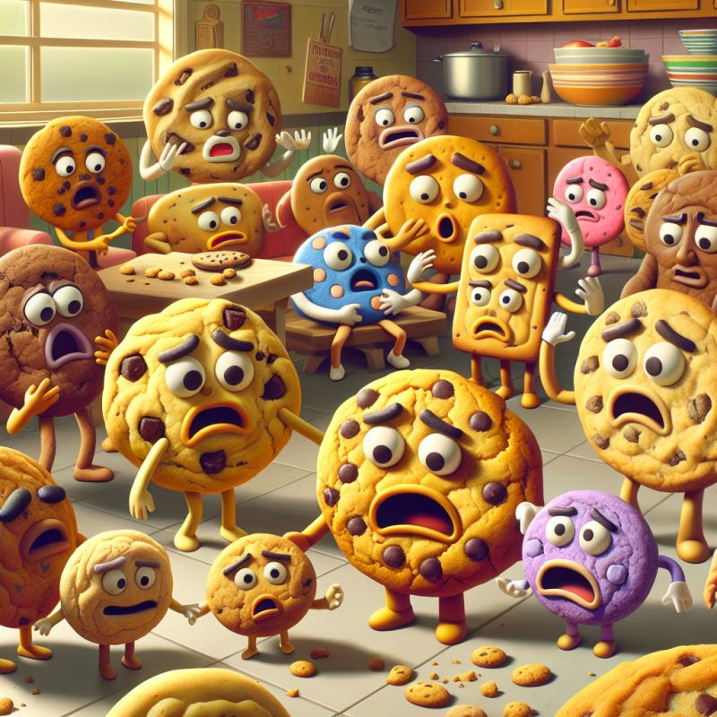𝗧𝗟;𝗗𝗥 ⏱️
LinkedIn Post
• DALLE-3 filters your content AFTER image creation
• With prompt “dead cookies” you can reproduce inconsistent filtering over OpenAI API
• 40% of cases with same “dead cookies” prompt stop through content filter and 60% reach us over API
What is DALLE-3 🖼️
• DALLE 3 is a generative text-to-image model by OpenAI also available as API
• You pay per image
• Images are created based on your prompt like “dead cookies”.
• You can also add details like: “Dead Cookies in cute Pixar style” or “Dead cookies with dramatic situation in cute Pixar style”
• Open-Source image GenAI models alternatives are available e.g., Stable Diffusion
• Image GenAI are under discussion because of misuse like deepfakes or reproducing intellectual property.
Finding/Observation: 👩🏽🔬
• DALLE-3 has a content filter to reduce misuse
• If you hit the content filter you do not get a resulting image for your prompt.
• The content filter is not applied based on the prompt, it is applied AFTER DALLE-3 generated the image, and the API decides in an extra step if the image should be sent to you. Likely some Image classifier.
• Same prompt sometimes results in an image and sometimes in a content-filter response. For the prompt “dead cookies” you get in 60% of requests an image and in 40% a content filter issue
How we found out 🍪
• We @Comma Soft AG develop tools and pipelines with OS GenAI but also with API requests.
• For good API-response handling, we also had to consider content filter scenarios. So we combined trigger words like "dead" with something like "cookies"
• We had inconsistent content filter and still the finding that in case of content filter the response time was roughly as long as in the case of created image.
My Questions to you 🤷🏼♂️
• Who should pay for “dead cookies” if the resulting image was created but not sent due to content filter?
• Have you known that the content filter for DALLE-3 is applied after image generation?
• Do you also encounter content filter although your prompts were in principle ok?
• Do you think content filters are a reasonable image GenAI misuse countermeasure?
• How would you reduce Image GenAI misuse?
• And most interesting (and we might never know OpenAI/DALL-E Open Ai), how do “Dead Cookies” images look like which are filtered out? 😅
The image was created by the prompt "Dead cookies in cute pixar style"
If you like more of such content, reach out to me 😊
#artificalintelligence #genai #aiethics #dalle #openai #texttoimage #deepfakes -
Evil LLMs available! Break GenAI Alignment through finetuning!
Need for LLM Alignment transparency?
𝗧𝗟;𝗗𝗥 ⏱️
LinkedIn Post
• Powerful LLMs are mostly aligned
• Alignment can be broken through finetuning
• Need for transparency in alignment processes
• Questions about alignment in LLMs
For one of the most interesting open source LLMs, the Mixtral 8x7B a finetuned LLM is available which has “broken” Alignment & answers to problematic prompts without prompt injections. Example in images (reference see below) shows “funny” but the astonishing LLM capabilities with broken Alignment.
Powerful LLMs are mostly aligned (Mixtral, LLAMA2, GPT4, …)
• They try to not give problematic responses
• Some prompt-based attacks are already known to breach this behavior
• But: model weights can be finetuned to break Alignment
• Some use cases might need different Alignment than pre-implemented LLM Alignment or our standards are not reflected within LLM behavior.
• Alignment process is majorly intransparent
LLM/GPT creation three-step approach ⚙️
1) Initial pretuning: Next token prediction
2) Chat/Instruction finetuning: training for conversational interaction & execution of tasks
3) Alignment: Adjust answers to not respond to critical questions like: creation of hate speech, critical advice in health issues, creation of spam or fraudulent content, and other
Alignment Explanation 👩🏽🏫
• Done in a mixture of click workers (ethical aspects raised in linked article*) and AI as evaluator (RLHF/RLAIF). Rate which answers are better not to be given or should be given differently. Based on feedback model weights are adjusted.
• Mostly intransparent process
• Unknown what is truly covered (not) to be answered
My Questions 🤷🏼♂️
• Do you had ever issues with Alignment in LLM interaction?
• Do you check Alignment when selecting an OS Model?
• Have you ever adjusted Alignment on model weights basis?
• Do you think it is valuable or too critical to release more or less aligned LLMs?
• Do we need regulation for model alignment?
IMHO 🤗
• We need transparent statements on how models were aligned and how their behavior has changed, while covering ethical concerns when providing LLMs with reduced Alignment.
• We need information on how easily well-adapted LLMs can be tripped with prompt engineering or finetuning.
• We might need less aligned LLMs for research or in special use cases:
e.g. if in the healthcare sector a model should respond because an expert is using it as assistance, or for security reasons to create e.g. sample datasets for countermeasures against LLM-based phishing attacks (which are based on de-aligned) LLMs
• Release models with awareness of possible dual use!
Within a great team @Comma Soft AG we are evaluating, selecting and finetuning open source LLMs for dedicated use cases.
Credit to:
Eric Hartford & Hugging Face & Mistral AI
https://lnkd.in/eyBSi4iu
AI Ethics - clickworkers:
https://lnkd.in/eKFfQZfF
#genai #artificialintelligence #aiethics #huggingface #llm #alignment -
LLAMA2 13B is faster than LLAMA2 7B, according to NVIDIA benchmark!
Interesting findings on NVIDIA's LLAMA 2 benchmark results.
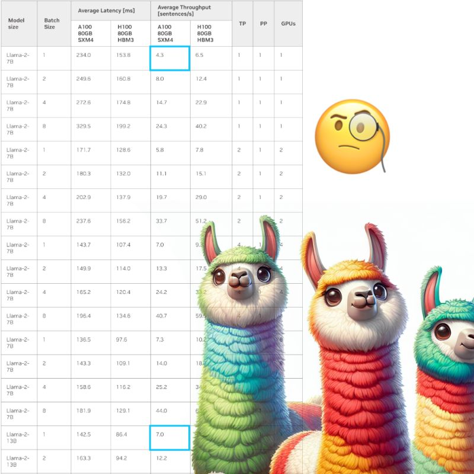𝗧𝗟;𝗗𝗥 ⏱️
LinkedIn Post
• NVIDIA LLAMA 2 Benchmark results
• LLAMA 13B reported faster than LLAMA 7B
• Questions about the accuracy of these findings
• Seeking community insights
GenAI community/NVIDIA: I am confused! Can anyone help?
Interesting Findings 📈
• NVIDIA LLAMA 2 Benchmark (including sentence throughput)
• Compares LLAMA-2 7B, 13B, and 70B
• Weird finding: LLAMA 13B is reported to be faster than LLAMA 7B
• Explicit Numbers: 7B Model has ~4 sentences/second throughput, 13B Model has ~7 sentences/second (LLAMA 70B ~1 sentence/second - this last one suits my expectation)
Questions 🤔
• NVIDIA NVIDIA AI, is there a mistake or can anyone else help me understand these numbers?
How we found out 📚
• Within our lovely GenAI team @Comma Soft AG, we are looking into tech details to implement the best solution
Link 📚
• Source I am talking about: https://lnkd.in/e2sUsi63 📚
Credit ❤️
• Nvidia thanks for providing benchmarks for LLAMA2
For further GenAI and ML tech discussions or such "weird" findings, reach out to me/follow me
#genai #machinelearning #llama